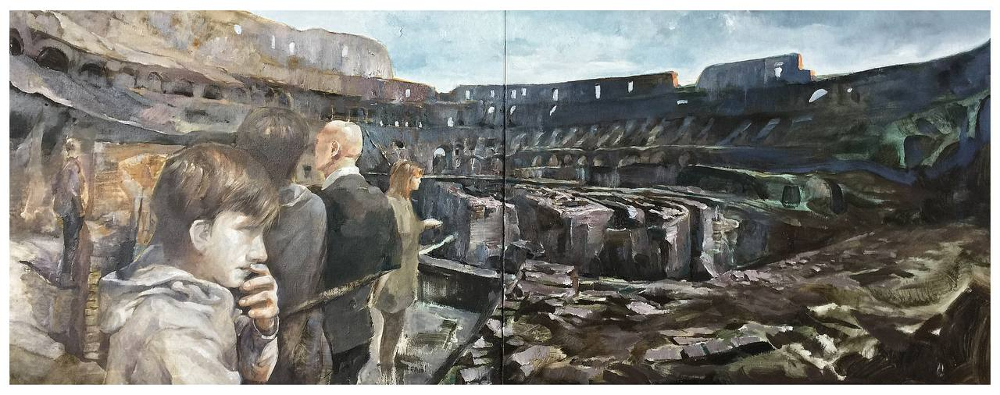
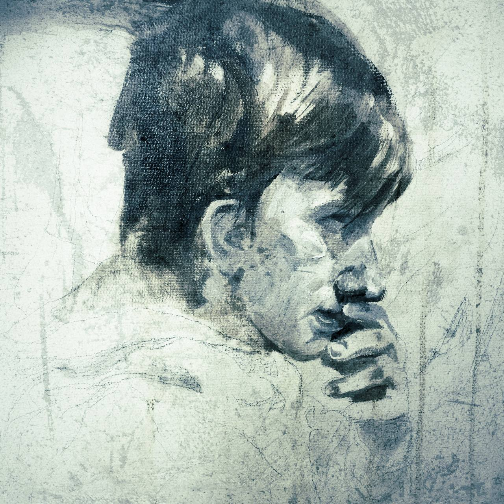
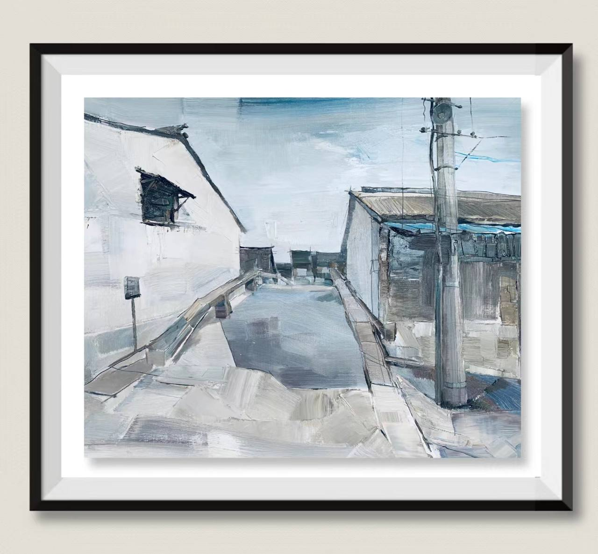
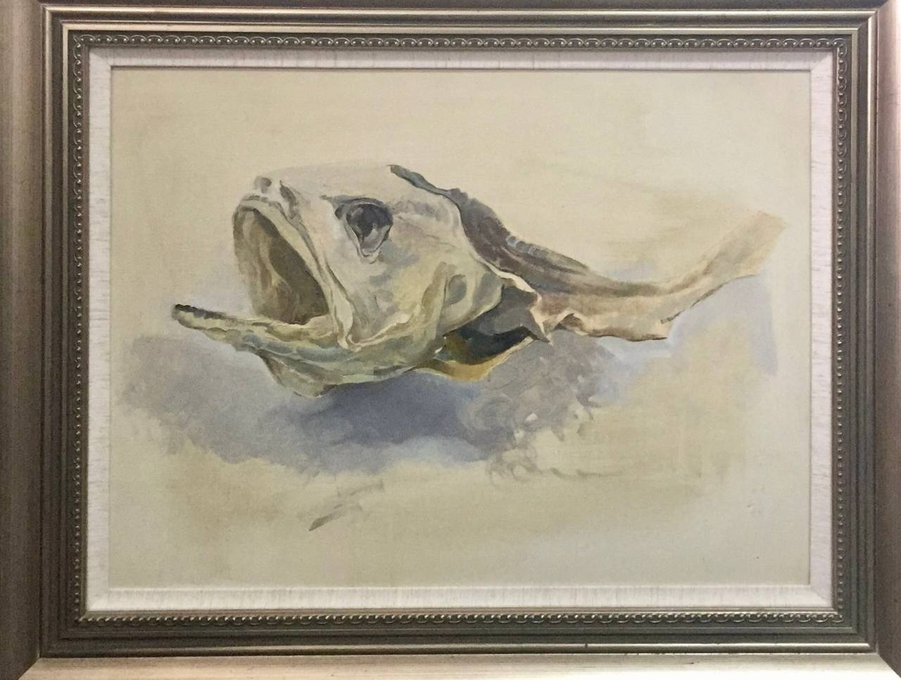
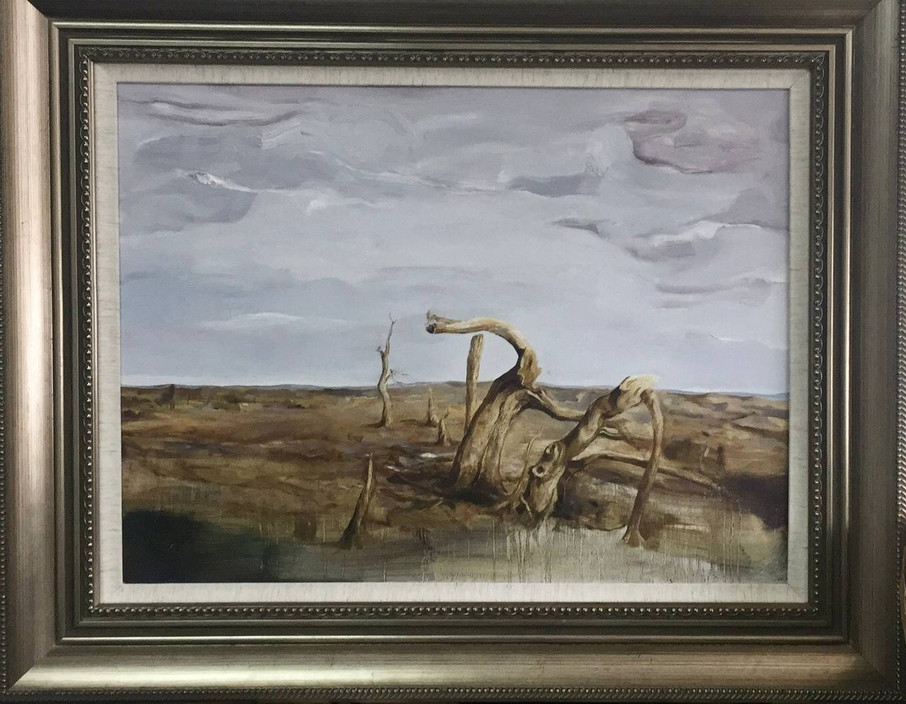
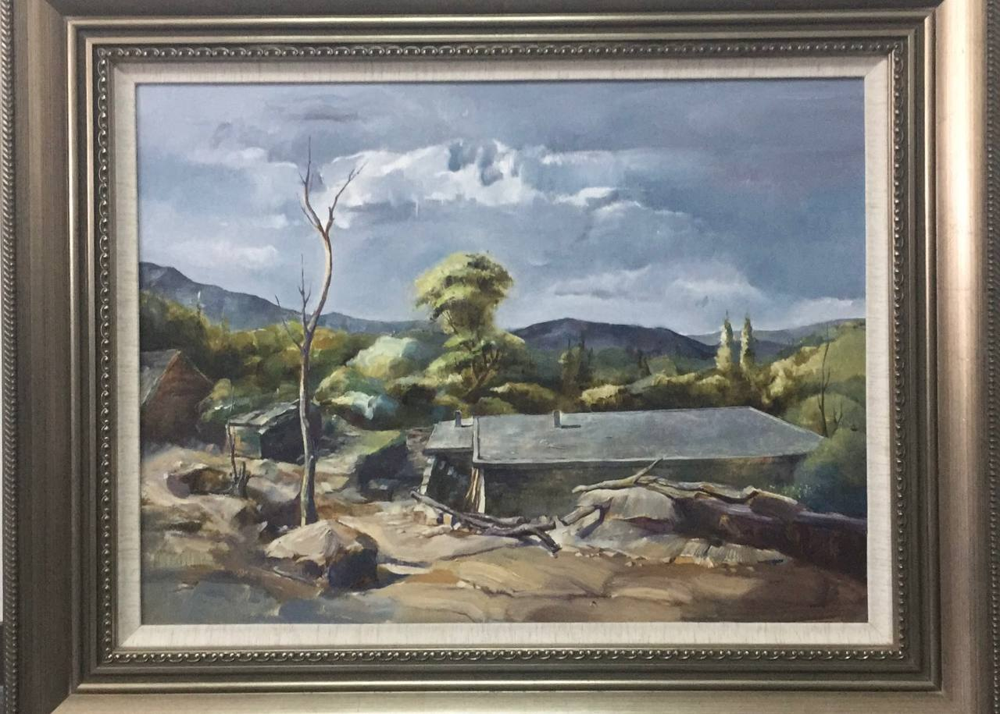
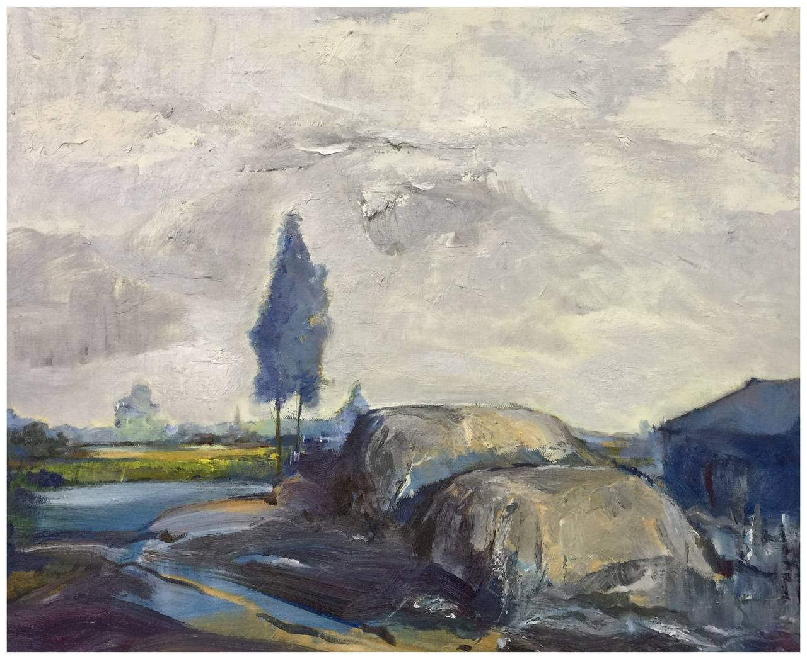

Oil Painting
Textural studies and emotional landscapes rendered on canvas. The analog counterpart to digital precision.
Selected Canvas Works (油画精选)

01 | Echoes of Stone (废墟回响)

02 | The Gaze (凝视)

03 | Monochrome Alley (水墨孤巷)

04 | Silent Still (静止的沉默)

05 | Wasteland (荒原)

06 | Rustic Memory (村落印记)

07 | Verdant Whispers (树影呢喃)